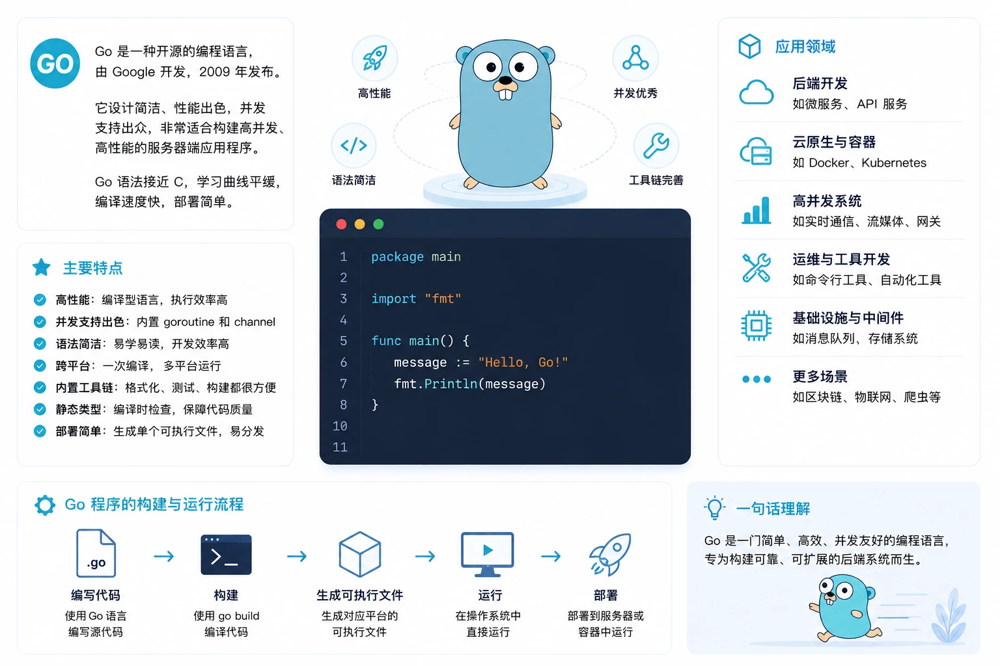

Introducción a Go
Go (también conocido como Golang) es un lenguaje de programación de código abierto desarrollado por Google, diseñado para que los desarrolladores puedan crear software simple, confiable y de alto rendimiento de manera eficiente.
El lenguaje Go nació en 2007, diseñado conjuntamente por tres ingenieros senior de Google — Robert Griesemer, Rob Pike y Ken Thompson — y se publicó oficialmente como código abierto en 2009.
El objetivo original de Go era resolver los puntos débiles del desarrollo de software a gran escala dentro de Google: C++ compila demasiado lento, el runtime de Java es demasiado pesado y los lenguajes de script tienen un rendimiento insuficiente. Los tres diseñadores querían crear un lenguajecon el rendimiento de los lenguajes compilados和y la eficiencia de desarrollo de los lenguajes dinámicosde programación.

La mascota del lenguaje Go es una marmota llamada Gopher, que simboliza la pragmática y la vitalidad de la comunidad de Go.
Los objetivos de diseño clave del lenguaje Go pueden resumirse en los siguientes puntos:
| Objetivo de diseño | Descripción |
|---|---|
| Velocidad de compilación | La compilación de proyectos grandes debería completarse en segundos, no en minutos. |
| Soporte de concurrencia | Admite programación concurrente de forma nativa a nivel del lenguaje, sin necesidad de bibliotecas de terceros. |
| Simplicidad | Sintaxis minimalista, sin clases ni herencia, reduce la carga cognitiva. |
| Seguridad de memoria | Recolección de basura automática (GC), evita los riesgos de la gestión manual de memoria. |
| Tipado estático | Verificación de tipos en tiempo de compilación, reduce errores en tiempo de ejecución. |
| Multiplataforma | Un mismo código puede compilarse en ejecutables para múltiples plataformas: Windows, Linux, macOS, etc. |
Los tres problemas centrales que Go buscaba resolver en su origen
| Problema | Dificultades de los lenguajes tradicionales | Solución de Go |
|---|---|---|
| Compilación lenta | La compilación de proyectos grandes en C++ suele tardar minutos e incluso horas. | La gestión de dependencias está diseñada de forma minimalista y la compilación es extremadamente rápida, normalmente en segundos. |
| Programación concurrente compleja | La combinación de hilos, bloqueos (locks) y callbacks hace que el código concurrente sea difícil de escribir y mantener. | Incorpora goroutines y channels; la concurrencia es tan fácil como escribir código secuencial. |
| Código difícil de mantener | C++ tiene demasiadas características, Java está sobrediseñado y la colaboración en equipos grandes es difícil. | Sintaxis minimalista, formato forzado y una sola forma de resolver cada problema. |
La filosofía de diseño central de Go
El lema oficial de Go esSimple, Fast, Reliable, estas tres palabras resumen todas sus decisiones de diseño.
Go mantiene deliberadamente la especificación del lenguaje reducida. Toda la especificación ocupa solo unas 60 páginas y tiene únicamente 25 palabras clave (en comparación, C++ tiene más de 80), lo que significa que un desarrollador con experiencia puede dominar la sintaxis completa en uno o dos días y luego concentrarse en la lógica de negocio.
Historia del desarrollo del lenguaje Go
El desarrollo del lenguaje Go no ocurrió de la noche a la mañana; a continuación se presentan los hitos clave desde el inicio del proyecto hasta hoy.
| Fecha | Versión/Evento | Descripción |
|---|---|---|
| Año 2007 | Inicio del proyecto | Rob Pike, Ken Thompson y Robert Griesemer comienzan a diseñar el lenguaje Go. |
| Noviembre de 2009 | Primera publicación de Go como código abierto | Publicado en GitHub bajo la licencia BSD. |
| Marzo de 2012 | Go 1.0 | Se publica la primera versión estable, con la promesa de compatibilidad hacia atrás. |
| Agosto de 2015 | Go 1.5 | El compilador pasa a escribirse en Go (autohospedado, antes en C), eliminando la dependencia de C. |
| Agosto de 2018 | Go 1.11 | Se introducen los Go Modules, resolviendo inicialmente la gestión de dependencias. |
| Febrero de 2020 | Go 1.14 | Go Modules se convierte en el método oficialmente recomendado para la gestión de dependencias. |
| Marzo de 2022 | Go 1.18 | Se introducen los genéricos (Generics), el mayor cambio de características del lenguaje desde su lanzamiento. |
| Febrero de 2024 | Go 1.22 | Se optimiza la semántica de las variables del bucle for y se mejora la coincidencia de patrones de rutas. |
| Agosto de 2025 | Go 1.24 | Se continúa mejorando el rendimiento del runtime, la experiencia de las herramientas y la biblioteca estándar. |
Cuando se publicó Go 1.0, el equipo principal hizo una gran promesa: todas las versiones posteriores de Go 1.x mantendrían compatibilidad hacia atrás. Esto significa que el código Go escrito hace diez años aún puede compilarse y ejecutarse directamente con el compilador más reciente de hoy.
Características principales del lenguaje Go
La filosofía de diseño de Go determina su conjunto de características: simple y potente. A continuación, desglosamos una por una las características más centrales del lenguaje.
Concurrencia nativa: Goroutines y Channels
La concurrencia es la característica más destacada del lenguaje Go.GoroutineEs una unidad de ejecución mucho más ligera que los hilos del sistema operativo: el tamaño inicial de la pila de cada Goroutine es de solo unos 2 KB, mientras que los hilos del sistema operativo suelen superar 1 MB.
Puedes ejecutar cientos de miles de Goroutines simultáneamente en una máquina normal, algo que el modelo tradicional de hilos no puede lograr.
Channel (canal)es el conducto de comunicación entre Goroutines, siguiendo la filosofía de concurrencia de Go:
No te comuniques compartiendo memoria; comparte memoria comunicándote. (Don't communicate by sharing memory; share memory by communicating.)
Un ejemplo sencillo de Goroutine y Channel:
Ejemplo
import (
"fmt"
"time"
)
// worker 模拟一个工作协程，从通道接收任务并处理
func worker(id int, jobs <-chan int, results chan<- int) {
for j := range jobs {
fmt.Printf("worker %d 开始处理任务 %d\n", id, j)
time.Sleep(time.Second) // 模拟耗时操作
results <- j * 2 // 将处理结果发送到 results 通道
fmt.Printf("worker %d 完成任务 %d\n", id, j)
}
}
func main() {
const numJobs = 5
jobs := make(chan int, numJobs) // 创建带缓冲的任务通道
results := make(chan int, numJobs) // 创建带缓冲的结果通道
// 启动 3 个 worker goroutine
for w := 1; w <= 3; w++ {
go worker(w, jobs, results)
}
// 发送 5 个任务到 jobs 通道
for j := 1; j <= numJobs; j++ {
jobs <- j
}
close(jobs) // 关闭通道，通知 worker 不会再有新任务
// 收集所有处理结果
for a := 1; a <= numJobs; a++ {
fmt.Printf("结果: %d\n", <-results)
}
}
Tipado estático e inferencia de tipos
Go es un lenguaje de tipado estático; todos los tipos de variables se determinan en tiempo de compilación. Pero a diferencia de C/Java, Go admiteinferencia de tipos—el compilador puede deducir automáticamente los tipos de las variables, sin que el desarrollador tenga que declarar el tipo repetidamente.
Este diseño, manteniendo la seguridad de tipos, hace que el código sea tan conciso como en un lenguaje dinámico.
Ejemplo
import "fmt"
func main() {
// Declaración completa: tipo especificado explícitamente
var name string = "runoob"
// Inferencia de tipos: el compilador deduce el tipo automáticamente
var version = 1.24 // Se deduce como float64
count := 100 // Declaración corta de variable, se deduce como int
message := "Hello Go" // Se deduce como string
// Declaración de múltiples variables
x, y := 10, 20 // Declarar varias variables a la vez
fmt.Println(name, version, count, message, x, y)
}
Compilación rápida
La compilación de Go es extremadamente rápida; incluso proyectos grandes (cientos de miles de líneas de código) pueden compilarse en unos segundos.
Esto se debe al cuidadoso mecanismo de análisis de dependencias de Go: solo compila los paquetes realmente referenciados y elimina la sobrecarga de analizar repetidamente los archivos de cabecera de C/C++.
Recolección de basura integrada (GC)
Go utilizaalgoritmo de marcado y barrido tricolor concurrentepara implementar la recolección automática de basura. El GC se ejecuta de forma concurrente con el código de usuario, y el tiempo de pausa suele estar en el orden de microsegundos, sin afectar significativamente el tiempo de respuesta del servicio.
Los desarrolladores no necesitan gestionar la memoria manualmente y, al mismo tiempo, pueden obtener un rendimiento en tiempo de ejecución cercano al de C.
Amplia biblioteca estándar
La biblioteca estándar de Go cubre la mayoría de las necesidades del desarrollo moderno, permitiendo realizar tareas comunes sin necesidad de dependencias de terceros. La siguiente tabla enumera los paquetes de biblioteca estándar más utilizados:
| Nombre del paquete | Función | Uso típico |
|---|---|---|
| net/http | Cliente y servidor HTTP | Construcción de servicios web y API RESTful |
| encoding/json | Codificación y decodificación JSON | Serialización y deserialización de datos en API |
| database/sql | Interfaz de acceso a bases de datos | Operación de MySQL, PostgreSQL, etc. junto con controladores |
| os | Interacción con el sistema operativo | Lectura/escritura de archivos, variables de entorno, gestión de procesos |
| fmt | Entrada y salida formateada | Impresión de registros, formato de cadenas |
| sync | Primitivas de sincronización | Control de concurrencia como Mutex, WaitGroup, Once, etc. |
| testing | Marco de pruebas | Pruebas unitarias, pruebas de referencia, pruebas de ejemplo |
| time | Manejo de tiempo | Cronómetros, temporizadores, formato de tiempo |
| context | Propagación de contexto | Control de tiempo de espera, cancelación de solicitudes, paso de valores |
| io | Abstracción de E/S | Interfaz unificada de lectura y escritura |
| crypto | Algoritmos criptográficos | Hash, cifrado simétrico/asimétrico, TLS |
| flag | Análisis de argumentos de línea de comandos | Desarrollo de herramientas CLI |
Compilación multiplataforma
El compilador de Go soportacompilación cruzada, permitiendo compilar ejecutables para otras plataformas de destino desde cualquier plataforma. Basta con establecerGOOS 和 GOARCHdos variables de entorno.
# 在 macOS 上编译 Linux 可执行文件 $ GOOS=linux GOARCH=amd64 go build -o app-linux main.go # 在 Linux 上编译 Windows 可执行文件 $ GOOS=windows GOARCH=amd64 go build -o app.exe main.go
El resultado de la compilación es un binario independiente; la máquina de destino no necesita instalar el runtime de Go ni ninguna dependencia, basta con ejecutarlo directamente.
Ámbitos de aplicación del lenguaje Go
Gracias a sus ventajas de alto rendimiento, fácil despliegue y concurrencia nativa, Go ha sido ampliamente adoptado en los siguientes ámbitos.
Nube nativa e infraestructura
Go es ellenguaje estándar de factode la pila tecnológica de nube nativa moderna. Casi todos los proyectos de nube nativa conocidos están escritos en Go.
| Proyecto | Descripción | Ámbito |
|---|---|---|
| Docker | Plataforma de contenedores que transformó la forma de entrega de software | Contenedores |
| Kubernetes (K8s) | Sistema de orquestación de contenedores, estándar de facto en la nube nativa | Orquestación de contenedores |
| etcd | Almacenamiento distribuido de clave-valor, componente central de K8s | Almacenamiento distribuido |
| Prometheus | Sistema de monitoreo y alertas | Observabilidad |
| Grafana | Plataforma de visualización de datos (backend) | Observabilidad |
| Terraform | Herramienta de infraestructura como código (IaC) | DevOps |
| Consul | Descubrimiento de servicios y gestión de configuración | Malla de servicios |
| Traefik | Proxy inverso y balanceador de carga de nube nativa | Redes |
Microservicios y desarrollo de APIs
Go, gracias asu consumo de memoria extremadamente bajo和su excelente capacidad de procesamiento concurrente, se convierte en la opción ideal para construir microservicios. Un servicio HTTP simple solo necesita unos pocos MB de memoria para ejecutarse.
Los frameworks web de Go más comunes incluyen Gin, Echo, Fiber, etc. En pruebas de referencia de rendimiento, suelen superar ampliamente a frameworks similares de otros lenguajes.
Desarrollo de herramientas CLI
La característica de Go de compilar en un único binario lo convierte en la opción preferida para el desarrollo de herramientas CLI. Los usuarios no necesitan instalar ningún runtime; descargan un archivo y pueden usarlo.
Proyectos conocidos incluyen:Hugo(generador de sitios web estáticos),fzf(herramienta de búsqueda difusa),gh(CLI de GitHub) ykubectl(herramienta de línea de comandos de Kubernetes).
Programación de redes y sistemas distribuidos
El paquete en la biblioteca estándar de Gonetproporciona un soporte completo de programación de redes, y el modelo de goroutines se adapta naturalmente a servicios de red de alta concurrencia (como servidores proxy, colas de mensajes, servidores de juegos). La implementación en Go del framework gRPC también es una solución principal para la comunicación entre servicios en sistemas distribuidos.
Cadena de bloques (Blockchain)
Go también tiene aplicaciones importantes en el ámbito de blockchain.go-ethereum（Geth）es la implementación de cliente más popular de Ethereum, y los componentes centrales de Hyperledger Fabric también están escritos en Go.
IA y aprendizaje automático (campo emergente)
Aunque Python sigue siendo el lenguaje dominante en el ámbito de IA/ML, Go está entrando gradualmente en este campo.Ollama(herramienta de ejecución local de modelos grandes) yLangChainGoel auge de proyectos como estos demuestra el potencial de Go en la infraestructura de IA y el desarrollo de aplicaciones LLM.
Inicio rápido
Configurar un entorno de desarrollo de Go desde cero solo requiere tres pasos: instalar, configurar y escribir código.
Instalación de Go
Visitago.dev/dldescarga el paquete de instalación para tu plataforma. Los usuarios de macOS también pueden instalarlo mediante Homebrew.
# macOS (Homebrew) $ brew install go # 验证安装 $ go version go version go1.24.0 darwin/arm64
El primer programa en Go
Crea el directorio del proyecto y escribe el clásico programa Hello World.
Ejemplo
// Cada programa en Go debe pertenecer a un paquete; el paquete main es la entrada del programa ejecutable
package main
// Importa el paquete de la biblioteca estándar para salida formateada
import "fmt"
// Función main: punto de entrada del programa, sin parámetros y sin valor de retorno
func main() {
// Println imprime una línea de contenido y añade automáticamente un salto de línea al final
fmt.Println("Hello, RUNOOB!")
fmt.Println("Bienvenido al mundo del lenguaje Go")
}
Hay dos formas de ejecutarlo: ejecutar directamente (sin generar un binario) o compilar y luego ejecutar.
# 方式一：直接运行（开发调试时常用） $ go run main.go Hello, RUNOOB! 欢迎来到 Go 语言的世界 # 方式二：编译为二进制文件后执行（生产部署时常用） $ go build -o hello main.go $ ./hello Hello, RUNOOB! 欢迎来到 Go 语言的世界
Inicialización de Go Modules
Para proyectos formales, se recomienda usar Go Modules para gestionar las dependencias. El nombre del módulo suele usar la ruta del repositorio (como la dirección de GitHub) para que otros puedan referenciarlo.
# 初始化 Go Module $ mkdir my-go-project && cd my-go-project $ go mod init github.com/runoob/my-go-project go: creating new go.mod: module github.com/runoob/my-go-project # go.mod 文件内容 module github.com/runoob/my-go-project go 1.24
Resumen de la sintaxis básica
La sintaxis de Go es concisa y consistente. A continuación, un vistazo rápido a los elementos de sintaxis más utilizados; cada ejemplo es un programa completo que se puede ejecutar directamente.
Variables y constantes
Go ofrece varias formas de declarar variables para adaptarse a diferentes escenarios. Las constantes se declaranconstcon la palabra clave.
Ejemplo
import "fmt"
func main() {
// Método 1: declaración estándar (tipo explícito)
var age int = 25
// Método 2: declaración y asignación posterior (el tipo se especifica al declarar)
var score float64
score = 98.5
// Método 3: declaración corta de variable (la más común, solo dentro de funciones)
name := "runoob"
// Método 4: declaración simultánea de múltiples variables
x, y := 10, 20
// Declaración de constante (determinada en tiempo de compilación, no modificable)
const Pi = 3.14159
const AppName = "RUNOOB"
fmt.Println(name, age, score, x, y, Pi, AppName)
}
Flujo de control
El flujo de control de Go se simplifica enif、for 和 switchtres formas.Go no tiene la palabra clave while; todos los bucles se implementan con for.
Ejemplo
import "fmt"
func main() {
// Sentencia if: la expresión de condición no necesita paréntesis, pero las llaves son obligatorias
score := 85
if score >= 90 {
fmt.Println("Calificación RUNOOB: A")
} else if score >= 60 {
fmt.Println("Calificación RUNOOB: B")
} else {
fmt.Println("Calificación RUNOOB: C")
}
// Bucle for 1: forma estándar de tres elementos (similar al for de C)
fmt.Print("Conteo: ")
for i := 0; i < 5; i++ {
fmt.Print(i, " ")
}
fmt.Println()
// Bucle for 2: solo condición (similar a while)
sum := 0
n := 1
for n <= 10 {
sum += n
n++
}
fmt.Println("Suma del 1 al 10:", sum)
// Bucle for 3: recorrido con range (el más común)
fruits := []string{"apple", "banana", "cherry"}
for index, fruit := range fruits {
fmt.Printf("Índice %d: %s\n", index, fruit)
}
// Sentencia switch: cada case tiene un break automático, no es necesario agregarlo manualmente
day := "Lunes"
switch day {
case "Lunes":
fmt.Println("Comienza una nueva semana")
case "Viernes":
fmt.Println("El fin de semana está cerca")
default:
fmt.Println("Un día normal")
}
}
Funciones
Las funciones en Go usanfuncDeclaración de palabras clave, admitemúltiples valores de retorno— Esta es la base del mecanismo de manejo de errores de Go.
Ejemplo
import (
"errors"
"fmt"
)
// Función add: ambos parámetros son de tipo int, devuelve un int
func add(a, b int) int {
return a + b
}
// Función divide: devuelve dos valores — el resultado y el error
// El patrón idiomático de Go (result, error) para el manejo de errores
func divide(a, b float64) (float64, error) {
if b == 0 {
// Devuelve el valor cero y un error personalizado
return 0, errors.New("el divisor no puede ser cero")
}
return a / b, nil // nil indica que no hay error
}
// Función swap: los múltiples valores de retorno se usan para devolver varios resultados calculados
func swap(x, y string) (string, string) {
return y, x
}
func main() {
// Llamar a una función normal
sum := add(10, 20)
fmt.Println("10 + 20 =", sum)
// Llamar a una función con múltiples valores de retorno y comprobar el error
result, err := divide(10, 2)
if err != nil {
fmt.Println("Error:", err)
} else {
fmt.Println("10 / 2 =", result)
}
// Probar el caso de división por cero
_, err = divide(10, 0) // _ se usa para ignorar valores de retorno no deseados
if err != nil {
fmt.Println("Error de división por cero:", err) // Se espera que se muestre este error
}
// Intercambio con múltiples valores de retorno
first, second := swap("RUNOOB", "Hello")
fmt.Println("Después del intercambio:", first, second)
}
Go no tiene un mecanismo de excepciones try-catch; en su lugar, maneja los errores explícitamente haciendo que las funciones devuelvan un valor error. Este diseño hace que las rutas de manejo de errores sean claras de un vistazo y evita flujos de control implícitos.
Estructuras y métodos
Go no tiene el concepto de clases; utilizastruct(struct) para organizar datos, y mediantese definen métodos para tiposse implementa un comportamiento de estilo orientado a objetos. Un método es una función con un receptor (receiver).
Ejemplo
import "fmt"
// User define la estructura de usuario (similar a una clase en otros lenguajes)
type User struct {
Name string // La primera letra en mayúscula = campo público (accesible desde otros paquetes)
Email string
age int // La primera letra en minúscula = campo privado (solo accesible dentro del paquete)
}
// Greet es un método definido para el tipo User
// (u User) es un receptor de valor; las modificaciones a u dentro del método no afectan el valor original
func (u User) Greet() string {
return fmt.Sprintf("Hola, soy %s, mi correo es %s", u.Name, u.Email)
}
// Birthday usa un receptor de puntero, por lo que puede modificar el valor original dentro del método
func (u *User) Birthday() {
u.age++ // Modifica directamente el campo age de la estructura original a través del puntero
}
func main() {
// Crear una instancia de la estructura
user := User{
Name: "runoob",
Email: "runoob@example.com",
age: 25,
}
// Llamar a los métodos
fmt.Println(user.Greet())
fmt.Printf("Edad antes del cumpleaños: %d"\n", user.age)
user.Birthday() // Con el receptor de puntero, age se incrementa en 1
fmt.Printf("Edad después del cumpleaños: %d"\n", user.age)
}
Interfaces
Las interfaces de Go sonimplementación implícita: si un tipo implementa todos los métodos de la interfaz, automáticamente satisface esa interfaz sin necesidad de declarar explícitamente implements. Este diseño reduce en gran medida el acoplamiento del código.
Ejemplo
import (
"fmt"
"math"
)
// Interfaz Shape: define el contrato de comportamiento de las formas geométricas
type Shape interface {
Area() float64 // Calcular el área
Perimeter() float64 // Calcular el perímetro
}
// Circle estructura circular
type Circle struct {
Radius float64
}
// Circle implementa la interfaz Shape (implementación implícita, sin declaración explícita)
func (c Circle) Area() float64 {
return math.Pi * c.Radius * c.Radius
}
func (c Circle) Perimeter() float64 {
return 2 * math.Pi * c.Radius
}
// Rectangle estructura rectangular
type Rectangle struct {
Width, Height float64
}
// Rectangle también implementa implícitamente la interfaz Shape
func (r Rectangle) Area() float64 {
return r.Width * r.Height
}
func (r Rectangle) Perimeter() float64 {
return 2 * (r.Width + r.Height)
}
// PrintShape acepta cualquier tipo que implemente la interfaz Shape
func PrintShape(s Shape) {
fmt.Printf("Área: %.2f, perímetro: %.2f"\n", s.Area(), s.Perimeter())
}
func main() {
c := Circle{Radius: 5} // Un círculo con radio 5
r := Rectangle{Width: 4, Height: 6} // Un rectángulo de ancho 4 y alto 6
fmt.Println("Círculo (ejemplo de RUNOOB):")
PrintShape(c)
fmt.Println("Rectángulo (ejemplo de RUNOOB):")
PrintShape(r)
}
El diseño de interfaces de Go fomenta las "interfaces pequeñas" — normalmente contienen solo de 1 a 3 métodos. Los ejemplos más clásicos son io.Reader (solo un método Read) e io.Writer (solo un método Write) en la biblioteca estándar.
Ejemplos habituales
A continuación, mediante dos ejemplos completos cercanos a escenarios reales, se muestra el uso de Go en el desarrollo real.
Creación de un servidor HTTP
Con la biblioteca estándar net/http se puede crear un servicio web completo sin necesidad de ningún framework de terceros.
Ejemplo
package main
import (
"encoding/json"
"fmt"
"log"
"net/http"
)
// Response define la estructura de datos de la respuesta JSON
type Response struct {
Code int `json:"code"` // Las etiquetas de estructura especifican los nombres de los campos JSON
Message string `json:"message"`
Data any `json:"data,omitempty"` // omitempty: no se incluye el campo si su valor está vacío
}
// helloHandler maneja las solicitudes de la ruta /hello
func helloHandler(w http.ResponseWriter, r *http.Request) {
// Solo se permiten solicitudes GET
if r.Method != http.MethodGet {
http.Error(w, "Solo se admiten solicitudes GET", http.StatusMethodNotAllowed)
return
}
// Obtiene name de los parámetros de consulta, por defecto es "RUNOOB"
name := r.URL.Query().Get("name")
if name == "" {
name = "RUNOOB"
}
// Construir los datos de la respuesta
resp := Response{
Code: 200,
Message: fmt.Sprintf("Hola, %s! Bienvenido al servicio HTTP de Go", name),
}
// Establecer la cabecera de respuesta y devolver JSON
w.Header().Set("Content-Type", "application/json; charset=utf-8")
json.NewEncoder(w).Encode(resp)
}
func main() {
// Registrar el manejador de la ruta
http.HandleFunc("/hello", helloHandler)
addr := ":8080"
fmt.Printf("Servidor RUNOOB iniciado, dirección de escucha: http://localhost%s"\n", addr)
fmt.Printf("Ejemplo de acceso: http://localhost%s/hello?name=Go开发者"\n", addr)
// Iniciar el servicio HTTP (bloquea hasta que el servicio se detenga)
log.Fatal(http.ListenAndServe(addr, nil))
}
Después de iniciar el servicio, visita la dirección correspondiente para obtener una respuesta JSON:
$ go run server.go
RUNOOB 服务器启动，监听地址: http://localhost:8080
访问示例: http://localhost:8080/hello?name=Go开发者
# 使用 curl 测试
$ curl http://localhost:8080/hello?name=Go开发者
{"code":200,"message":"你好，Go开发者！欢迎访问 Go HTTP 服务"}
$ curl http://localhost:8080/hello
{"code":200,"message":"你好，RUNOOB！欢迎访问 Go HTTP 服务"}
Para servicios web de nivel de producción, se recomienda elegir un framework adecuado según las necesidades reales. Para proyectos pequeños basta con la biblioteca estándar; cuando se necesiten funciones como agrupación de rutas o middleware, se puede optar por Gin o Echo.
Grupo de workers concurrentes (worker pool)
Este es un escenario clásico de la concurrencia en Go: usar un número limitado de goroutines para procesar grandes lotes de tareas en paralelo.
Ejemplo
package main
import (
"fmt"
"sync"
"time"
)
// worker lee tareas del canal jobs, y después de procesarlas escribe los resultados en el canal results
// Cuando la tarea está terminada, se llama a wg.Done() para notificar al WaitGroup
func worker(id int, jobs <-chan int, results chan<- int, wg *sync.WaitGroup) {
defer wg.Done() // Marca este worker como completado sin importar cómo salga la función
for job := range jobs {
fmt.Printf("[Worker %d] procesando tarea %d"\n", id, job)
time.Sleep(200 * time.Millisecond) // Simular el tiempo de procesamiento de la tarea
results <- job * job // Calcular el cuadrado como resultado
}
}
func main() {
const numJobs = 10 // Número total de tareas
const numWorkers = 3 // Número de workers concurrentes
jobs := make(chan int, numJobs) // Canal de tareas con buffer
results := make(chan int, numJobs) // Canal de resultados con buffer
var wg sync.WaitGroup // Para esperar a que todos los workers terminen
fmt.Println("=== Ejemplo de Worker Pool de RUNOOB ===")
// Iniciar un número fijo de goroutines workers
for w := 1; w <= numWorkers; w++ {
wg.Add(1) // Cada vez que se inicia un worker, el contador del WaitGroup aumenta en 1
go worker(w, jobs, results, &wg)
}
// Enviar todas las tareas al canal
for j := 1; j <= numJobs; j++ {
jobs <- j
}
close(jobs) // Cerrar el canal jobs; el bucle range del worker terminará por sí mismo
// Esperar a que todos los workers terminen y luego cerrar el canal de resultados
go func() {
wg.Wait()
close(results)
}()
// Recopilar e imprimir todos los resultados
fmt.Println("Resumen de resultados:")
for result := range results {
fmt.Printf("%d ", result)
}
fmt.Println("\nTodas las tareas han sido procesadas)
}
$ go run workerpool.go === RUNOOB Worker Pool 示例 === [Worker 3] 处理任务 1 [Worker 1] 处理任务 3 [Worker 2] 处理任务 2 [Worker 1] 处理任务 4 [Worker 3] 处理任务 5 [Worker 2] 处理任务 6 ... 结果汇总: 1 4 9 16 25 36 49 64 81 100 所有任务处理完成
Herramientas y comandos habituales
Go incluye un conjunto completo de herramientas de desarrollo, sin necesidad de instalar herramientas de compilación adicionales. A continuación se presenta una referencia rápida de los comandos go más utilizados:
| Comando | Función | Escenario común |
|---|---|---|
| go build | Compilar el código fuente | Genera un ejecutable para su despliegue |
| go run | Compilar y ejecutar | Probar código rápidamente, desarrollo y depuración |
| go test | Ejecutar pruebas | Ejecuta las funciones de prueba en los archivos _test.go |
| go mod init | Inicializar módulo | Genera el archivo go.mod al crear un nuevo proyecto |
| go mod tidy | Gestionar dependencias | Descarga las dependencias que faltan y elimina las que no se usan |
| go fmt | Formatear código | Unifica el estilo del código (de uso obligatorio en la comunidad Go) |
| go vet | Análisis estático | Examina construcciones sospechosas en el código |
| go get | Instalar paquetes de dependencias | Descarga e instala el paquete especificado |
| go doc | Ver documentación | Muestra la documentación de un paquete o función en la terminal |
| go env | Ver variables de entorno | Muestra configuraciones como GOPATH, GOROOT, etc. |
| go clean | Limpiar caché de compilación | Libera espacio en disco |
go fmt es una convención obligatoria en la comunidad Go: todo el código Go debe formatearse con go fmt. Esto elimina las discusiones sobre el estilo del código y mantiene una alta consistencia en la base de código. La mayoría de los editores (VS Code, GoLand, etc.) admiten ejecutar go fmt automáticamente al guardar.
Precauciones y problemas frecuentes
Los siguientes son algunos de los problemas más comunes que enfrentan los principiantes en Go, junto con recomendaciones de mejores prácticas.
GOPATH y Go Modules
Desde Go 1.16, Go Modules se ha convertido en el modo predeterminado.Los proyectos nuevos ya no necesitan ubicarse en el directorio GOPATH; se pueden crear en cualquier lugar.
Si ves en tutoriales la configuración compleja de GOPATH, normalmente puedes ignorarla: usar Go Modules satisface la gran mayoría de las necesidades de desarrollo.
El manejo de errores no debe ignorarse
El compilador de Go no te obliga a manejar los errores, pero ignorarlos es una mala práctica. Al menos debes registrar o imprimir los mensajes de error durante la etapa de desarrollo.
Ejemplo
import (
"fmt"
"os"
)
func main() {
// No recomendado: ignorar el error
data, _ := os.ReadFile("config.txt")
fmt.Println(string(data))
// Recomendado: manejar el error explícitamente
data, err := os.ReadFile("config.txt")
if err != nil {
fmt.Printf("Error al leer el archivo: %v\n", err)
return
}
fmt.Println(string(data))
}
Fugas de goroutines
Después de iniciar una goroutine, si se bloquea para siempre y no puede salir, se produce una fuga de goroutine. En servicios de larga duración, las fugas de goroutines agotan gradualmente la memoria.
Buenas prácticas:
- Asegúrate de que cada goroutine tenga una ruta de salida
- Usacontext.Contextpara pasar señales de cancelación
- Usasync.WaitGrouppara rastrear el ciclo de vida de las goroutines
Compartición del array subyacente de los slices
Varios slices pueden compartir el mismo arreglo subyacente. Cuando realizas append o modificación en un slice, debes tener en cuenta si afectará a otros slices que referencian el mismo arreglo subyacente.
Cuando no estés seguro, usa copy() para crear una copia independiente.
Diferencia entre interfaz nil y puntero nil
Esta es una trampa clásica de Go: cuando un valor de interfaz contiene un puntero nil, la propia interfaz no es nil. Esto significa queif err != nilpuede devolver true, pero el puntero real es nil.
Al devolver un error, debes devolver directamente `return nil` en lugar de `return` una variable de interfaz de error que contiene un puntero nil.
El sistema de tipos de Go es simple pero tiene su propia «personalidad». Los desarrolladores que vienen de otros lenguajes deberían tomarse el tiempo de leer la documentación oficial de Effective Go (golang.org/doc/effective_go) para comprender las prácticas idiomáticas y los patrones de diseño de Go.
Organización del código
Go usapaquetes (package)para organizar el código, en lugar de la estructura de directorios de carpetas.
Todos los archivos .go en el mismo directorio deben pertenecer al mismo paquete, y el nombre del paquete generalmente coincide con el nombre del directorio (excepto el paquete main y los archivos de prueba _test). Go no tiene el concepto de «subpaquetes»: los paquetes en diferentes directorios, incluso si sus rutas son similares, son completamente independientes.
Resumen
El lenguaje Go, con su sintaxis minimalista, su rendimiento excepcional y su soporte nativo de concurrencia, ha establecido una posición irremplazable en áreas como la nube nativa, los microservicios y DevOps.
No es un lenguaje que persigue características, sino un lenguaje que persigue la eficiencia en la ingeniería: permite a los equipos escribir menos código y obtener sistemas más estables.
Las ventajas y los escenarios de aplicación de Go se resumen a continuación:
| Dimensión | Rendimiento de Go |
|---|---|
| Curva de aprendizaje | Sintaxis simplificada; los desarrolladores con experiencia en programación pueden empezar en una semana. |
| Velocidad de compilación | Compilación en segundos para proyectos grandes, ciclo de retroalimentación de desarrollo muy rápido. |
| Rendimiento en tiempo de ejecución | Cercano a C/C++, muy superior a Python/Ruby/JavaScript. |
| Uso de memoria | Un servicio HTTP básico solo necesita 5-10 MB de memoria. |
| Concurrencia | Las goroutines son extremadamente livianas; decenas de miles de concurrencias no son un problema. |
| Dificultad de despliegue | Se compila en un binario independiente; basta con copiarlo para ejecutarlo. |
| Más adecuado para | Servicios nativos de la nube, microservicios, herramientas CLI, sistemas distribuidos, programación de redes. |
| Menos adecuado para | Aplicaciones de escritorio GUI, desarrollo móvil, núcleos de sistemas operativos, capas bajas embebidas. |
Si estás construyendo un servicio backend orientado a concurrencia, una herramienta CLI o un proyecto de infraestructura, Go es una opción que vale la pena considerar seriamente.
Otras extensiones
Haz clic para compartir notas
<p style="font-size:14px;">¡La nota debe ser una extensión del contenido de este artículo!</p><br> <p style="font-size:12px;"><a href="../tougao.html" target="_blank">Si quieres enviar un artículo, haz clic aquí</a></p> <p style="font-size:14px;"><a href="../w3cnote/runoob-user-test-intro.html" target="_blank">Cómo obtener el código de invitación de registro</a></p> <h3 class="text-muted"><i class="fa fa-info-circle" aria-hidden="true"></i> Antes de compartir notas debes <a href=";.html" class="runoob-pop">iniciar sesión</a>.</h3> <p><a href="../w3cnote/runoob-user-test-intro.html" target="_blank">Cómo obtener el código de invitación de registro</a></p>